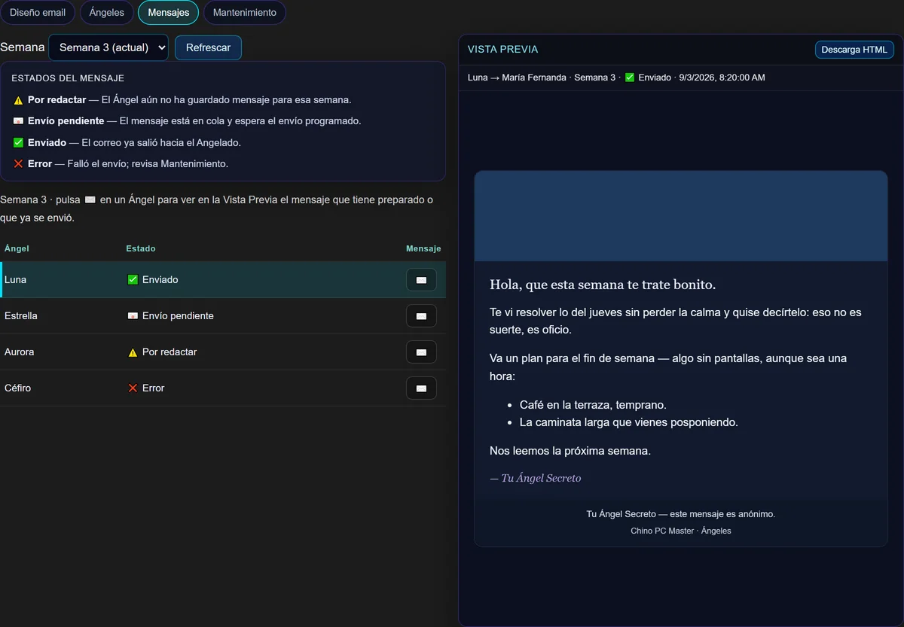

CHINO PC MASTER
Transformando procesos, optimizando resultados.
Computadoras, redes e internet y aplicaciones para su negocio. Le explico todo sin palabras técnicas.
Transformando procesos, optimizando resultados.
Computadoras, redes e internet y aplicaciones para su negocio. Le explico todo sin palabras técnicas.
Toque lo que se parece a su problema y le muestro cómo lo resuelvo.
Si tiene que ver con computadoras, yo lo resuelvo. Elija lo que necesita y vea en detalle cómo puedo ayudarle.
Optimización, limpieza interna, instalación de Windows, mejoras de equipo, eliminación de virus y respaldo de sus archivos.
Ver servicios REDES E INTERNETWiFi en toda la casa, redes para negocios, internet con dos proveedores que no se cae, e impresoras y archivos compartidos.
Ver servicios NEGOCIOS Y APLICACIONESAplicaciones a la medida, tareas que se hacen solas, oficina en la nube y herramientas web para su negocio o grupo.
Ver servicios ASESORÍA Y APRENDIZAJELe ayudo a elegir qué comprar, le enseño a usar su tecnología a su ritmo y le propongo cómo ahorrar tiempo.
Ver serviciosLe explico qué tiene su equipo y qué voy a hacer, en un lenguaje que cualquiera entiende.
Sabe cuánto cuesta antes de empezar. Sin sorpresas al final.
Formación Cisco CCNA y soporte técnico a nivel empresarial, ahora al servicio de su casa o negocio. Ver trayectoria
Cada solución se adapta a su forma de trabajar, y no al revés.
Herramientas que diseñé y que hoy usan personas reales. Explórelas.

Un juego de ángeles secretos por correo: el equipo escribe desde el celular y los mensajes salen solos cada semana.
Conocer la herramientaCuadrícula de números, control de vendidos y un afiche listo para compartir.
Quiero una APLICACIÓN WEBCertificados con código único: cualquiera puede comprobar en línea que son auténticos.
Verificar un certificado